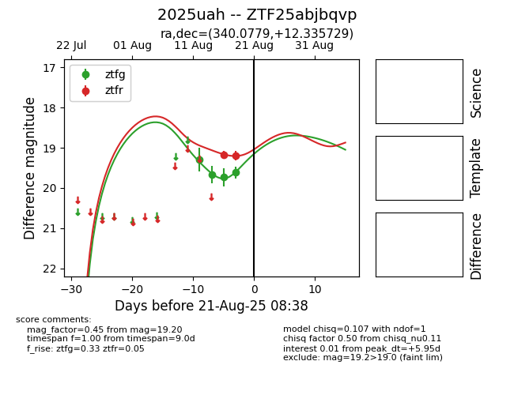

Target 2025uah at 2025-08-26 11:05, see:
FINK: fink-portal.org/ZTF25abjbqvp
Lasair: lasair-ztf.lsst.ac.uk/objects/ZTF25abjbqvp
ALeRCE: alerce.online/object/ZTF25abjbqvp
TNS: wis-tns.org/object/2025uah
YSE: ziggy.ucolick.org/yse/transient_detail/2025uah
alt names
ZTF25abjbqvp (ztf,fink)
2025uah (tns,yse)
coordinates:
equatorial (ra, dec) = (340.0779,+12.33573)
galactic (l, b) = (79.8023,-39.31308)
photometry
last atlaso=19.72, ztfg=20.00, ztfr=19.47
3 atlaso, 2 ztfg, 5 ztfr detections
